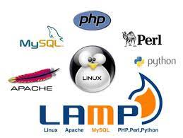

Liste todas las herramientas iniciales que se requieren para trabajar con PHP
- Un IDE, en este caso Visual studio code
- Xampp
- Servidores de Apache que contiene Xampp
- Php extension pack
- Php server
- Php formatter

¿Que es PHP?
PHP (acrónimo de Hypertext Preprocessor) es un lenguaje de programación de código abierto utilizado principalmente para crear aplicaciones web dinámicas y sitios web. Fue desarrollado originalmente en 1994 por Rasmus Lerdorf y se ha convertido en uno de los lenguajes más populares para el desarrollo web, especialmente en combinación con MySQL para manejar bases de datos relacionales. PHP es un lenguaje de programación del lado del servidor, lo que significa que el código se ejecuta en el servidor web antes de que la página se envíe al navegador del usuario. Es fácil de aprender y utilizar, y ofrece una amplia gama de funciones y herramientas para la creación de sitios web interactivos y dinámicos.

¿Que es un servidor PHP?
cuando se habla de servidor PHP no se está haciendo referencia a las instalaciones típicas de servidores LAMP o similares que aparecen en los resultados de búsqueda. En su lugar, se refiere al software diseñado específicamente para interpretar el lenguaje de programación PHP en el lado del servidor. El servidor PHP se encarga de procesar el código PHP de una aplicación y generar HTML plano que será entregado al servidor web para su envío al navegador. Existen varios tipos de servidores PHP con ventajas y desventajas específicas, y los procesos de instalación también pueden variar. En resumen, el servidor PHP es un software diseñado específicamente para interpretar el lenguaje de programación PHP en el lado del servidor y procesar el código PHP de una aplicación, generando HTML plano que se entregará al servidor web para su envío al navegador.
Tipos de servidores PHP?
- PHP-FPM: es el servidor de PHP favorito del autor, funciona como un servidor independiente del servidor web y tiene una excelente performance.
- PHP-PM: es un manejador de procesos y balanceador para aplicaciones PHP, y brilla especialmente en aplicaciones basadas en el framework Symfony.
- HHVM: es un software de máquina virtual orientado a la ejecución de scripts en Hack, aunque también puede ser utilizado para aplicaciones PHP en versiones anteriores.
- Handlers usados en Apache: son manejadores de PHP compatibles con Apache, y el mejor de ellos es FCGI, que implementa mejoras en velocidad y seguridad con respecto a CGI.
¿Como instalar un servidor PHP?
PHP-FPM, una herramienta utilizada para el despacho de PHP que funciona en conjunto con un servidor web como Nginx o Apache. La instalación en CentOS se realiza a través del comando "yum install php-fpm", mientras que en Ubuntu y Debian se utiliza "apt install php-fpm". También se instalan otros paquetes comunes de PHP para su correcto funcionamiento. Para configurar PHP-FPM, se modifica el archivo /etc/php-fpm.d/www.conf, en el que se define el nombre del pool de FPM y se configuran otras variables como user, group, listen, y pm. Este archivo incluye otros archivos .conf ubicados en la ruta /etc/php-fpm.d/*.conf. Es importante mencionar que si se desea utilizar una versión moderna de PHP como PHP 7.3, se puede utilizar un repo como Remi, que permite instalar distintas versiones de PHP y sus paquetes en forma paralela.